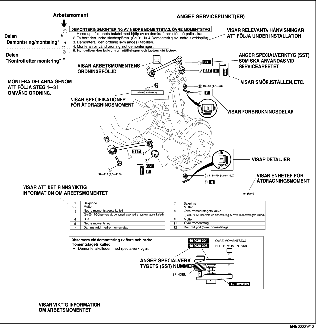

• Den här handboken beskriver arbetsgången vid alla nödvändiga service- och reparationsarbeten. Arbetsmomenten är indelade i följande huvudsakliga områden:
• Enkla arbetsmoment som lätt kan utföras genom att titta på bilen som (exempelvis demontering/montering av delar, upphissning och lyftning av fordonet, rengöring och okulärbesiktning) har utelämnats.
1. De flesta reparationsarbeten inleds med en översiktsbild. Bilden identifierar de olika delarna, visar hur delarna sitter ihop och beskriver hur man inspekterar delarna visuellt. Endast de demonterings/monteringsmoment som måste utföras i en bestämd ordning har skrivna instruktioner.
2. Översiktsbilden visar slitdelar, åtdragningsmoment och symboler som anger smörjställen för olja, fett och tätningsmedel. Dessutom visas också symboler för delar som kräver specialverktyg eller liknande.
3. Arbetsmomenten är numrerade och det viktigaste momentet i arbetet visas i bild, märkt med motsvarande nummer. Ibland kan det också finnas viktiga punkter eller extra information om vissa moment. Läs igenom denna när du utför service på den aktuella delen.

• Det finns åtta symboler som anger olja, fett, vätskor, tätningsmedel och användning av specialverktyg eller motsvarande. Dessa symboler visar på applikationspunkter eller användningen av dessa material under service.
• Det finns ett flertal Varningar, Försiktighetsuppmaningar, Observera, Specifikationer och Övre och undre gränsvärden i denna handbok.